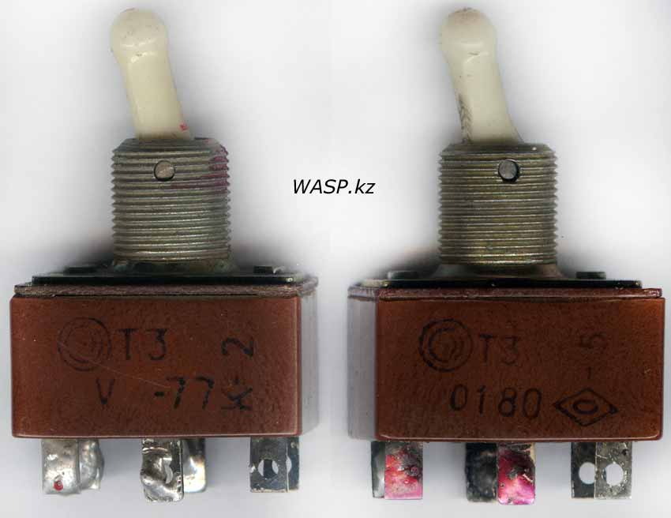
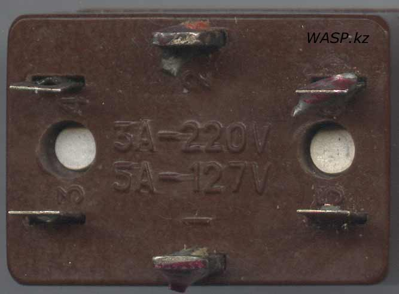
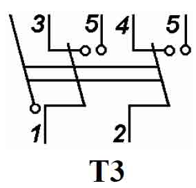
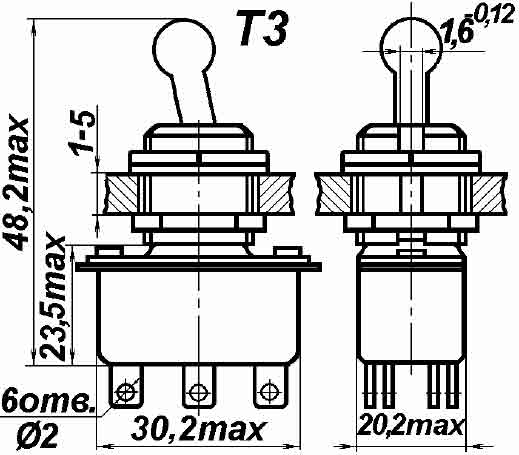
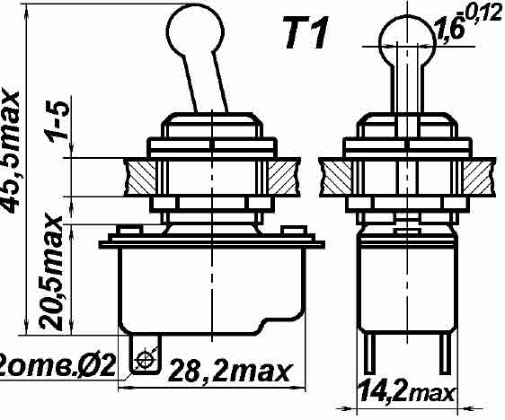
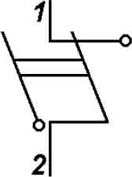

Тумблер T3
Тумблер Т3 с врубными контактами, предназначен для работы в цепях постоянного и переменного тока в радиоэлектронной аппаратуре. Исполнение - для умеренного и холодного климата, всеклиматические. Тумблеры изготовлены из пластмассы с верхней металлической частью и пластмассовым переключателем.

{kind=link}

На фото тумблеры изготовлены в 1977 и 1980 годах на Смоленском заводе радиодеталей. Маркировка нанесена сбоку на корпусе краской. На нижней стороне между выводами только технические данные по вольтажу и амперам.
Корпус неразборный - верхняя металлическая часть присоединена к нижней алюминиевыми заклепками.


Схема коммутации и габаритные размеры тумблера Т3
Технические характеристики тумблера Т3:
- Род тока - постоянный, переменный
- Вид нагрузки - активная, индуктивная
- Напряжение - от 0,1 до 250 В
- - постоянный с индуктивной нагрузкой - от 0,1 до 27 В
- - переменный с индуктивной нагрузкой - до 127 В
- Ток от 0,01 до 6 А (постоянный), и 0,1 до 6 А (переменный)
- Максимальная коммутируемая мощность:
- - постоянный ток с активной нагрузкой - 660 Вт
- - постоянный ток с индуктивной нагрузкой - 135 Вт
- - переменный ток с активной нагрузкой - 660 Вт
- - переменный ток с индуктивной нагрузкой - 317 Вт
- Число циклов коммутации - от 2000 до 10000, в зависимости от тока и вида нагрузки
- Усилие переключения – от 5 до 16 Н
- Сопротивление электрического контакта:
- – для изделий с приемкой «1» – 0,05 Ом
- – для изделий с приемкой «5» – 0,02 Ом
- Сопротивление изоляции – не менее 1000 МОм
- Испытательное напряжение – 1100 В эфф.
- Диапазон рабочих температур – от -60°С до +100°С
- Каждый тип тумблера имеет два конструктивных исполнения:
- – с несветящейся ручкой
- – со светящейся ручкой (наличие буквы «С» после дефиса в составе маркировки)
- Масса тумблера Т3 – не более 26 г.
- Содержание драгоценных металлов в Т3 - серебро 0,064323 (для приемки СКК) 0,228879 (для приемки ВП)
Тумблер Т-1
{kind=link}
Имеет все те же характеристики, что и вышеописанный Т3, только всего два вывода.
Корпус неразборный - соединен алюминиевыми заклепками...
Содержание драгметаллов в тумблере Т1 - серебро 0,07591 грамм.


Схема коммутации и размеры тумблера Т1.